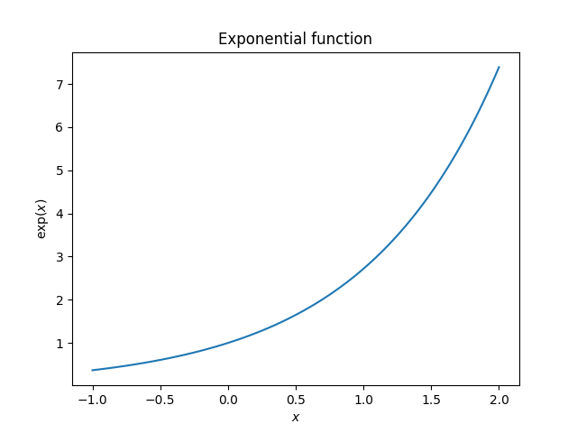
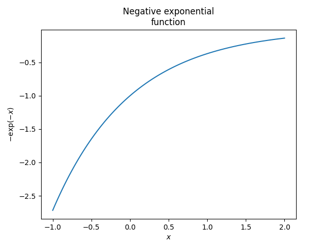

Note
Go to the end to download the full example code
Plot function
# Code source: Óscar Nájera # License: BSD 3 clause
- 
- 
9 import numpy as np
10 import matplotlib.pyplot as plt
11
12
13
14 def main():
15 x = np.linspace(-1, 2, 100)
16 y = np.exp(x)
17
18 plt.figure()
19 plt.plot(x, y)
20 plt.xlabel('$x$')
21 plt.ylabel(r'$\exp(x)$')
22 plt.title('Exponential function')
23
24 plt.figure()
25 plt.plot(x, -np.exp(-x))
26 plt.xlabel('$x$')
27 plt.ylabel(r'$-\exp(-x)$')
28 plt.title('Negative exponential\nfunction')
29 # To avoid matplotlib text output
30 plt.show()
31
32 if __name__ == '__main__':
33
34 import pyamr
35 pyamr.utils.plot.MidpointNormalize(vmin=0, vmax=1, midpoint=0.5, clip=False)
36 main()
Total running time of the script: ( 0 minutes 0.139 seconds)